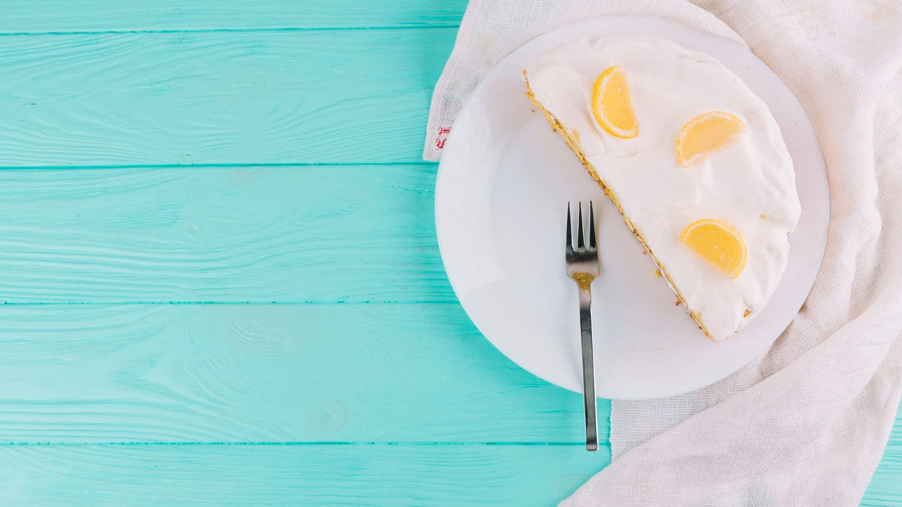
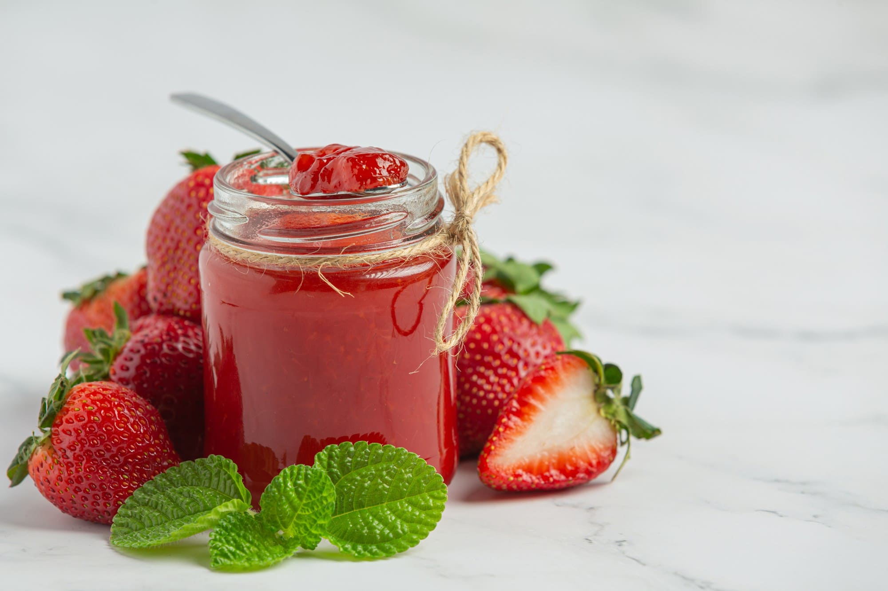
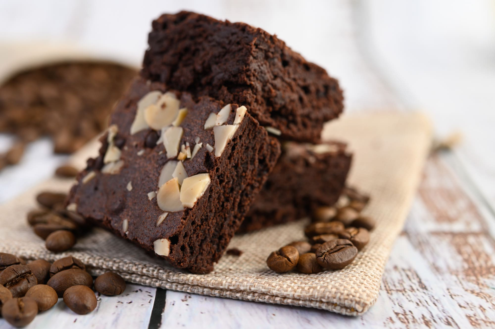
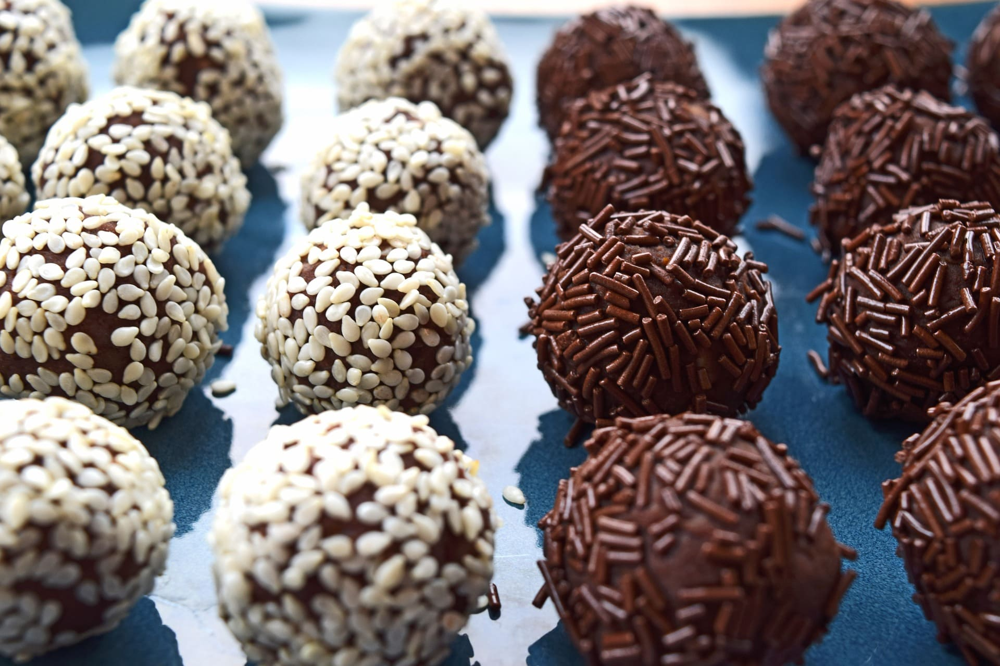
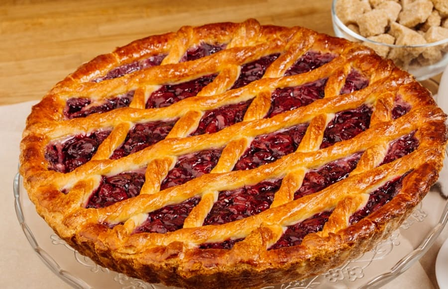

Recetas Dulces

Lemon pie
- 1. La masa. Aplastar con el tenedor la manteca, la yema, el azúcar, el agua y el vinagre, hasta obtener una pasta. Incorporar de a poco la harina hasta que se forme un bollo.
- 2. Aplastar ligeramente la masa con el palote enharinado, colocarla en una tartera desarmable enmantecada y enharinada y terminar de estirarla aplastando con los dedos enharinados. Pincharla con un tenedor. Recortar los bordes en forma prolija.
- 3. Cocinar la tarta en horno caliente hasta que la masa esté sequita y suavemente dorada. Retirar del horno y dejar enfriar.
- 4. El relleno. Poner en una cacerola el agua, el azúcar, el jugo de limón y la fécula. Mezclar con batidor de alambre. Llevar al fuego y cocinar mezclando continuamente hasta que la preparación hierva y espese. Retirar del fuego y verter sobre las yemas previamente batidas.
- 5. Volver a poner la mezcla en la cacerola y llevar nuevamente al fuego, revolviendo siempre hasta que espese un poco más. Retirar la mezcla del fuego, tamizarla en un bol y, mientras esté caliente, mezclar la manteca y la ralladura.
- 6. Una vez tibia la crema, rellenar la tarta precocida, alisando la superficie.
- 7. El merengue. Realizar un almíbar con el azúcar y una cucharada de agua. Batir las claras hasta espumarlas. Cuando el almíbar llegue los 118°, verterlo en fomra de hilo sobre las claras, mientras se baten. Continuar el batido hasta que el bowl se sienta frío.
- 8. Estacionar la tarta en la heladera hasta que la crema esté bien firme. Retirar la tarta de la heladera y cubrirla totalmente con el merengue. Para que quede "doradita", meterla en el horno un minuto. Enfriar.
Mermelada de frutillas
- 1. Lavar las frutillas, sacar el tallo y cortar en 2 si son pequeñas, en 4 las medianas y en 6 las grandes.
- 2. Colocar en un bol con el azúcar (yo uso la mitad del peso de la fruta), sal y el trozo de jengibre. Revolver y refrigerar toda la noche.
- 3. Revolver y cocinar en una olla amplia, dejar hervir suavemente a fuego bajo y revolver ocasionalmente. Retirar la espuma que a veces se forma. No tapar.
- 4. Después de 45 minutos. Sacar una cucharada del líquido de la mermelada a un plato y refrigerar 5 minutos. Probar.
- 5. Cuando este de la consistencia adecuada, puedan pasar un dedo sin que se vuelva a juntar como en la foto, sacar el trozo de jengibre y envasar caliente.
- 6. Refrigerar.


Brownies
- 1. En un bol ponemos el chocolate y la mantequilla. Lo metemos al microondas a temperatura media para que se vaya derritiendo. Una vez derretido lo lo mezclamos muy bien.
- 2. Ponemos los 4 huevos y el azúcar en un bol.
- 3. Agregamos la harina y la cucharadita de bicarbonato. Mezclamos muy bien.
- 4. Agregamos el chocolate que hemos derretido junto con la mantequilla y el toque de vainilla. Seguimos mezclando.
- 5. Agregamos las nueces y las pepitas de chocolate.
- 6. En un recipiente de horno ponemos un poco de mantequilla y harina para que no se nos pegue el brownie.
- 7. Incorporamos la mezcla y cubrimos con unas pepitas y unas nueces (opcional). Introducimos al horno durante 30-35 minutos a 180º.
Trufas
- 1. Al baño María, derretimos el chocolate junto a la mantequilla. Podrías hacerlo también al microondas pero yo personalmente recomiendo hacerlo al baño María, porque así el chocolate queda más brillante y porque en el microondas corre el peligro de quemarse la mezcla si no andamos con mucho cuidado.
- 2. Cuando se haya derretido, añadimos la nata para montar y mezclamos hasta que se hayan integrado todos los ingredientes
- 3. Vertemos toda la mezcla en un bol y dejamos que se enfríe por completo. 1 día entero a temperatura ambiente o de 4 horas a una noche entera en la nevera
- 4. Cuando haya endurecido, cogemos una cucharadita de la masa y la colocamos en un plato. Repetimos el proceso y vamos poniendo varias cucharaditas de la masa en el plato
- 5. Cogemos una de las porciones y le damos forma de bolita. No es necesario que quede perfecto (las auténticas trufas tienen una forma irregular). Después la hacemos rodar sobre la cobertura que deseemos – fideos de chocolate, fideos de colorines, cacao en polvo… Incluso puedes bañarlas en chocolate blanco – La colocamos en un molde pequeño de magdalenas o cupcakes y ya está lista


Pasta Frola
- 1. Empezaremos la receta de pasta frola casera mezclando en un bol el azúcar con la manteca a temperatura ambiente. Luego, incorpora los huevos uno a uno y ve agregando la harina, la esencia de vainilla y la ralladura de limón o naranja poco a poco.
- 2. Vuelca la mezcla en una superficie enharinada y amasa hasta obtener una masa blanda. Deja reposar la masa de pastafrola tradicional en la nevera por 30 minutos aproximadamente.
- 3. Pasado el tiempo de reposo, retira la masa del frigorífico y deja que tome temperatura ambiente. Luego, engrasa y espolvorea con harina un molde para horno. Extiende la masa con los dedos, haciendo la base para la pasta frola fácil casera.
- 4. Corta el dulce de membrillo en pequeños trozos y aplástalo con un poco de agua caliente o vino dulce hasta que se ablande del todo. En este paso puedes usar un pasapuré o calentarlo un poco para conseguir la textura deseada.
- 5. Agrega el membrillo sobre la base de masa de pasta frola que ya has preparado, espárcelo bien por todas partes y cúbrelo con tiras de masa para decorar.
- 6. Finalmente, lleva al horno la receta de pasta frola con membrillo a una temperatura media de 180 ºC durante unos 45 minutos.
- 7. ¡Listo! Ya puedes disfrutar de esta exquisita tarta acompañado de tus seres queridos. Si te gusta mucho el membrillo, además de utilizarlo para esta receta de pasta frola fácil y económica, también puedes echarle un vistazo a la receta de los pastelitos de membrillo y queso, una delicia.